Esta obra de EnergyLabs Brasil, foi licenciada com uma Licença Creative Commons - Atribuição - Partilha nos Mesmos Termos 3.0 Não Adaptada.
Permissões adicionais ao âmbito desta licença podem estar disponíveis em http://www.energylabs.com.br.
Medindo Corrente com PIC 16F877A
Bom, darei aqui uma explicação de como fazer um medidor de corrente com um PIC 16F877A (programando em C). Estarei usando como simulador o Proteus ISIS e como IDE o CCS C.
Aqui está o circuito ao qual mediremos a corrente:
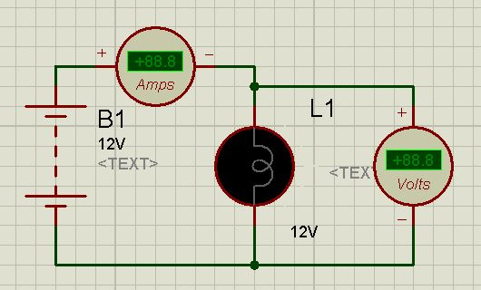
Uma bateria de 12V ligada a uma lâmpada de 12V com 24 Ω de resistencia e seus respectivos medidores de tensão e corrente. Ligando esse circuito obtemos os valores de 0,5A (mais precisamente 496mA) e 12V na lâmpada.
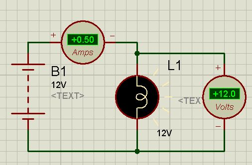
Para medirmos a corrente, é nescessario um shunt, que neste caso podemos usar um resistor de resistencia relativamente baixa, como 0,1Ω. Este resistor será colocado em série com a lâmpada, no polo negativo. Ao ligar obtemos os seguintes valores:
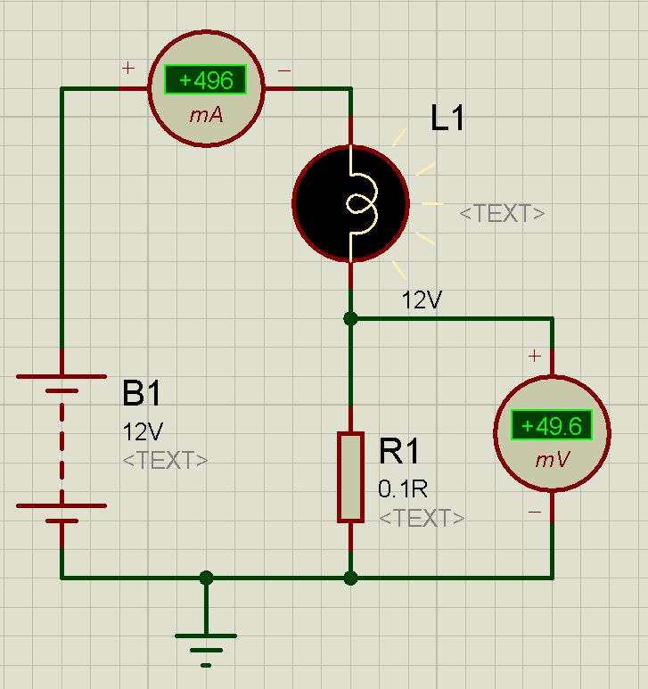
49,6mV no resistor. Usando a Lei de Ohm como U = R * I podemos chegar a corrente:
49,6 * 10^-3 = 0,1 * I
49,6 * 10^-3 / 0,1 = I
496 * 10^-3 = I
I = 496 mA
Ok, na entrada analógica do microcontrolador PIC16F877A, há uma especificação de tensão maxima. No caso, é +Vcc a GND caso não seja acertada a referencia. Com Vcc = 5V e GND = 0 temos 5V de espaço, porém o valor 49,6mV é muito baixo para isto, logo nescessitaremos aumenta-lo com um Amplificador Operacional.
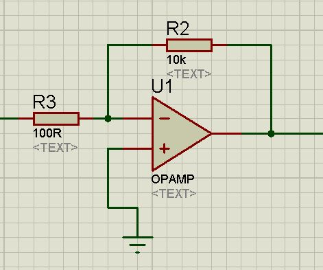
Com o modo Amplificador Inversor do amplificador operacional podemos facilmente multiplicar a tensão de entrada, no simular as tensões de alimentação do amplificador operacional estão acertadas para +15V e -15V, muito mais altas do que o que nescessitamos.
Podemos calcular o Ganho de Tensão do amplificador operacional da seguinte maneira:
Vout = - ( Vin * ( R2 / R1 ) )
Como a tensão maxima da entrada analógica do PIC sendo 5V, podemos multiplicar por 10 nesse primeiro estagio. Selecionamos os resistores R1 e R2 para 100Ω e 10kΩ respectivamente.
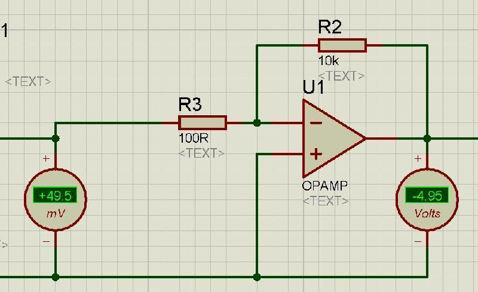
Porém assim, temos uma tensão negativa, não podendo ser usada para o PIC, e caso queiramos uma lampada de maior potência estaremos muito proximo do limite maximo do PIC (4,95V), então colocaremos outro amplificador operacional no modo inversor para dividir a tensão por 2.
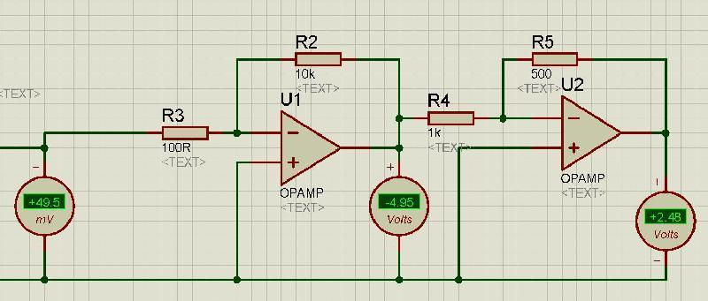
Então a saida é 2,48V, metade da entrada do PIC, podendo assim usar uma lâmpada do dobro da potência. Então agora vamos descobrir a formula geral desse circuito para acharmos a corrente apartir da tensão de saida.
Para corrente I no resistor de 0,1Ω temos uma saida V temos: I = V / 0 , 1
Após isso, com amplificadores operacionais multiplicamos por 100 e dividimos por 2. Logo multiplicamos por 50. Logo Vout = Vin * 50.
Assim Vin = Vout / 50. Jogando isso na formula anterior temos:
I = Vout / 50 * 0,1
I = Vout / 5
Chegamos ai a formula final que precisaremos usar no programa do PIC para calcular a corrente apartir da tensão na entrada dele.
CCS C
Para a visualização dos valores recebidos pelo microcontrolador, estarei usando um LCD HD44780 (o mais comum) ligado a PORTD do PIC16F877A. No CCS C, o driver de LCD já está configurado para essa porta. O circuito para simulação será este:
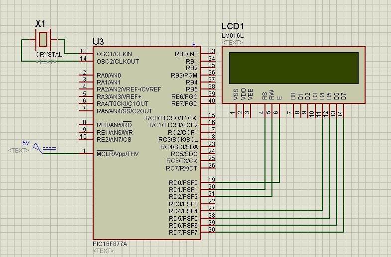
Tudo acertado iremos começar o programa no CCS C então:
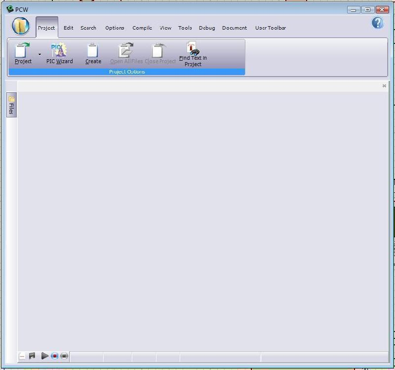
Iremos em Project Wizard e acertaremos as configurações como nas imagens abaixo:
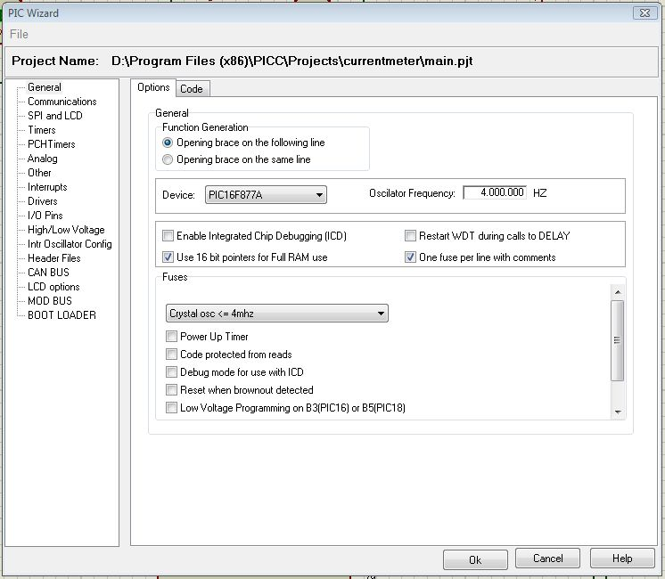
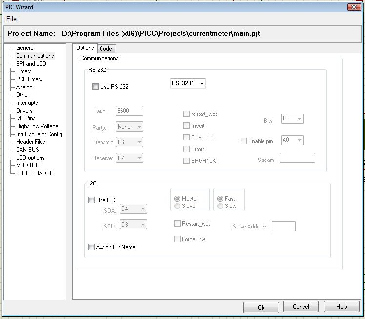
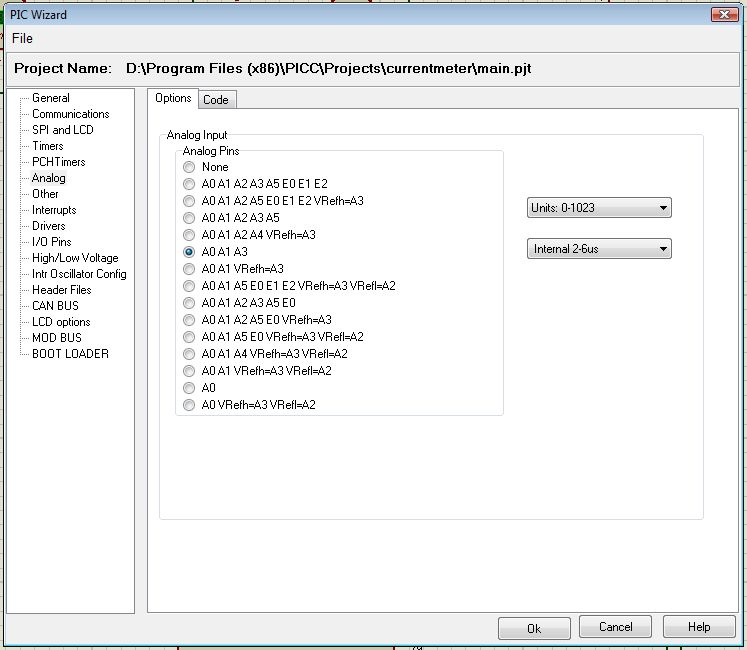
Após tudo acertado, iremos para uma tela semelhante a essa:
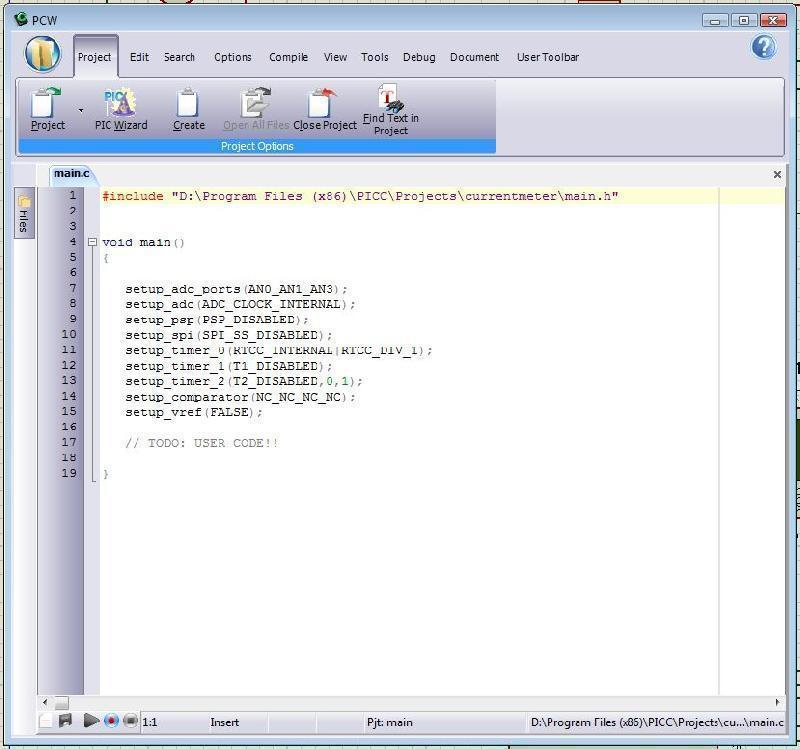
O que configuramos foi o seguinte:
- O modelo pic para 16F877A
- O pic para rodar em 4Mhz
- O pic para usar Oscilador a Cristal
- O pic para usar Ponteiros de 16Bit para uso da Ram inteira.
Começaremos então colocando uma linha que incluirá o driver do LCD do CCS C e também variaveis que vamos usar no programa. Adicionaremos está linha abaixo do primeiro #include:
#include
long int valor;
float tensao;
Após feito isso, podemos começar a escrever o código, exatamente onde o CCS C deixou escrito // TODO: USER CODE!!
Começaremos com a inicialização do LCD e após isso faremos um programa de teste para escrever no LCD.
lcd_init();
lcd_putc("Teste do LCD!");
while(true) {}
Aperte F9 para compilar o programa, e vamos agora configurar no ISIS para a simulação do programa compilado.
Clicaremos uma vez com botão direito, e uma vez com botão esquerdo em cima do pic, e irá abrir uma janela igual a esta:
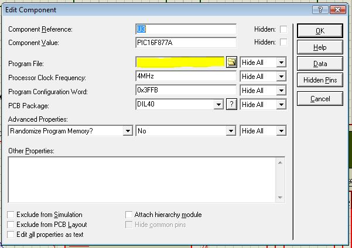
No campo marcado na imagem, selecione o arquivo compilado (nome_do_programa.hex) e após isso acerte o Processor Clock Frequency para 4Mhz:
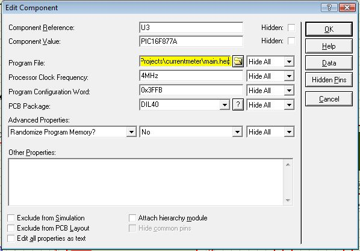
Após feito isso podemos já simular e ver se deu certo. Clique no botão play na barra inferior do ISIS:
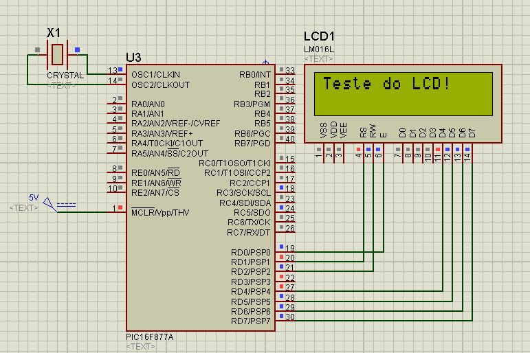
Hmm, muito bom! Funciona! Agora vamos a parte do conversor analógico-digital. Iremos escrever as seguintes linhas dentro do laço while ( dentro das chaves { } )
SET_ADC_CHANNEL(0);
delay_ms(10);
valor = READ_ADC(7);
delay_ms(10);
printf(lcd_putc,"\f Valor: %LU",valor);
Fazendo isso, acertar o canal de leitura do ADC para o 0 (primeiro), esperar 10ms, iniciar e ler (7), e colocar o conteudo na variável valor, esperar 10ms novamente, e depois mostrar o valor no lcd. Compile o programa, mas antes de rodar, é nescessário a ligação do sinal de saida do amplificador operacional no pino A0 do PIC.
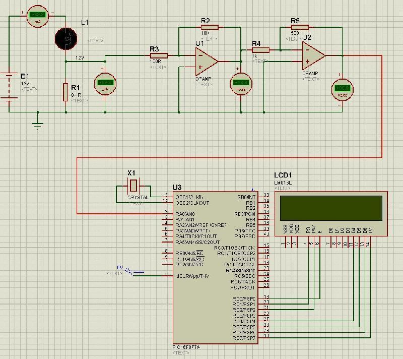
Após ligado isso, podemos testar:
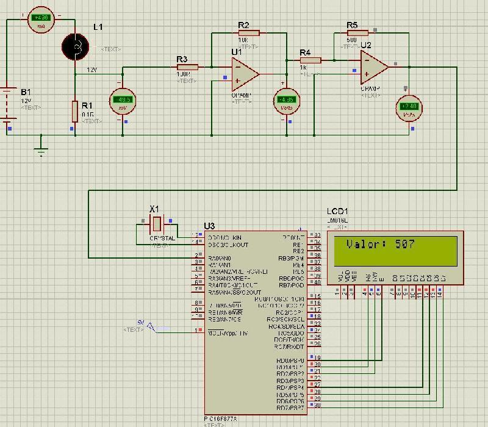
Certo, funcionou. Mas e esse valor 507? Bom, este seria o valor que o ADC forneceu. Para sabermos a tensão da entrada, precisamos saber de onde o ADC tirou isso. Antes falamos que a tensão que teriamos seria de 0V a 5V, e nas definições acertamos a precisão do ADC para 1024bit. logo temos 5 / 1024 V de precisão, ou seja, cada bit será equivalente a 5 / 1024 V.
5 / 1024 = 0.0048828125
Logo faremos o seguinte, multiplicaremos o valor que conseguimos por esse numero, assim teremos em volts a tensão na entrada do pic.
Ok, trocaremos as linhas dentro do laço while pelo seguinte:
SET_ADC_CHANNEL(0);
delay_ms(10);
valor = READ_ADC(7);
delay_ms(10);
tensao = valor * 0.0048828125;
printf(lcd_putc,"\f Tensao: %F",tensao);
Mesma coisa do que o anterior, apenas usando a float valor para casas depois da virgula. A saida da float será arredondada para 2 casas decimais. Compilando e rodando, temos:
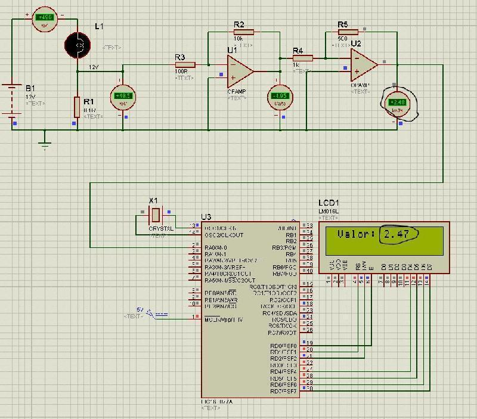
Temos 2,47V, algo bem proxim dos 2,48V medidos com voltimetro. Ok, temos a tensão certinha, agora precisamos aplicar a fórmula dada la em cima. Porém, a corrente está abaixo de 1 Amper, logo podemos fazer a visualização em mA apenas multiplicando tudo por 1000. Faremos o seguinte então:
SET_ADC_CHANNEL(0);
delay_ms(10);
valor = READ_ADC(7);
delay_ms(10);
tensao = valor * 0.0048828125 / 5 * 1000;
printf(lcd_putc,"\f I: %FmA",tensao);
Divindindo a tensão que foi conseguida por 5 e multiplicando por 1000, compilando e rodando temos:
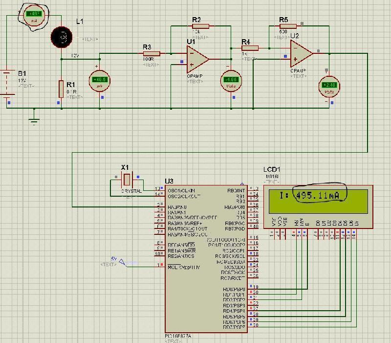
Temos 495,11mA, proximo dos 496mA medidos com Miliamperimetro. Para verificar a funcionalidade do circuito, alteremos a resistencia da lampada para 12 Ohms (em teoria, a corrente irá dobrar), no campo indicado, trocar 24 por 12
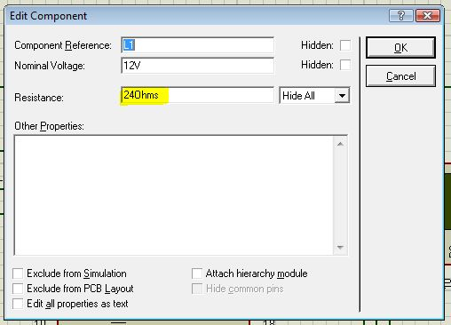
Testando:
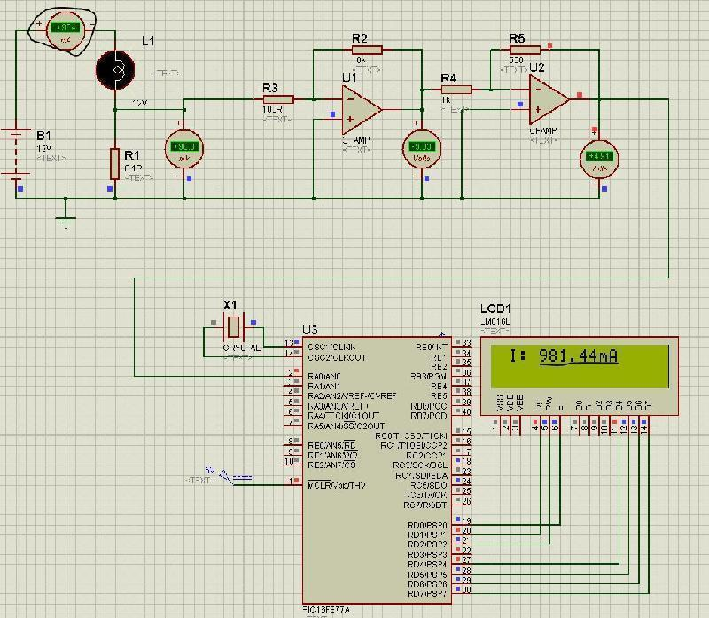
Pronto =), tudo funcionando nos conformes. Simples não?
Quer uma sugestão para projeto de aprendizagem? Tente fazer um circuito que meça a potência na carga, medindo a tensão na carga e a corrente, e multiplicando as duas.
Código final:
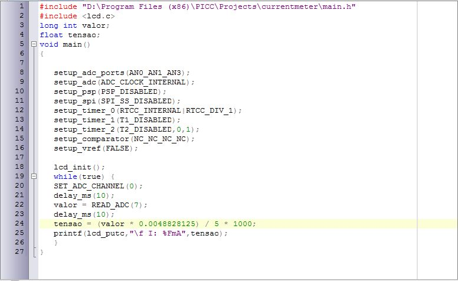
Documento por: Lucas Teske
Esta obra de EnergyLabs Brasil, foi licenciada com uma Licença Creative Commons - Atribuição - Partilha nos Mesmos Termos 3.0 Não Adaptada.
Permissões adicionais ao âmbito desta licença podem estar disponíveis em http://www.energylabs.com.br.